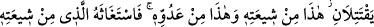

Mescidin duvarını yık demedim
Dil, şükür ve hamd için yaratılmıştır
Hak bilir, onu gıybet için kullanmaz
Kulak, Kur’an ve nasihat geçididir
İftirâ ve bâtıl sözleri duymamaya çalış
Gözler, Allah’ın yaratma gücünü görürse iyidir
Kardeşinin ve dostunun ayıp ve kusurlarına karşı onları yumuver
Git şükret, çünkü nimetler içindesin
Gurur ve kibir, mahrumluk getirir
Allah bir hayrı murâd etmemişse
Kul başkalarına iyilik edebilir mi?
Ey oğul, iyilik et; çünkü insanoğlu
İhsanla avlanabilir, hayvan ise tuzakla
Kötülük etme, sonra iyi olan dostundan da kötülük görürsün
Kötülük tohumundan iyi bir meyve bitmez.
Yâni hayır meyvası, hayır ağacında olur. Nitekim acı elma da acı elma ağacında
yetişir. Kim de hurma mahsûl etmek isterse toprağa hurma çekirdeği diksin.
Hikâyeye göre bir kadının, çocuklarını kendisiyle beslediği bir koyunu vardı. Bir gün
bir misafiri geldi. Kadın yemek için bir şey bulamadı ve koyunu kesti. Sonra Allah
Teâlâ ona kestiği koyunun yerine başka bir koyun verdi. Kadın bu koyunun memesinden
bal ve süt sağıyordu. Bu durum insanlar arasında meşhur oldu. Bir gün kendisine
ziyâretçiler gelip bunun sebep ve hikmetini sordular. “O koyun müridlerin kalbinde
otlardı” dedi. Yâni Allah Teâlâ, o kadını misafirine koyun yedirerek ihsanda
bulunmasından dolayı bir başka koyunla mükâfatlandırmış ve onun bu bezli ve iyiliği
gönülden ve kalp huzuruyla olduğu için onun mahsûlünü de koyunun memesinden süt ve
bal akıtarak ortaya koymuştur. Bu sebeple, ihlâsla yapılan iyilik ve ihsanın karşılığı da
ancak Rahman tarafından husûsî bir iyilik ve ihsan ile karşılık bulur.
Cimri ve eli sıkı olmanın karşılığı da “ihsan”dan mahrum kalmaktır. Allah Teâlâ’dan
bizleri de nefisleri için kendisini talep ve irâdede, saâdeti tahsilde, siyâde (yücelik ve
hüküm sürmede) ve ziyâdeyi elde etmede ihsan üzere olan kullarından kılmasını niyâz
ederiz.